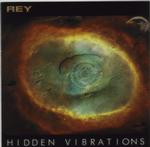

Home Artist links Label link

| Artist: | Rey |
| Title: | Hidden Vibrations |
| Label: | Tele Sound Recordings |
| Length(s): | 59 minutes |
| Year(s) of release: | 1999 |
| Month of review: | 07/2000 |
Line up
Ulrik Rey Henningson - everything
Tracks
| 1) | Voices In The Dark | 2.11
|
| 2) | Sharmila | 5.17
|
| 3) | Temple Of Beyond | 8.19
|
| 4) | Black Ocean | 6.16
|
| 5) | Behind The Walls | 7.09
|
| 6) | Silver | 6.15
|
| 7) | Violet Winds | 6.10
|
| 8) | Exploring Mountains | 4.56
|
| 9) | Confused Direction | 7.55
|
| 10) | Sharmila X | 4.21
|
Summary
A synthesizer musician with his debut album. He's not without experience though
since he played in quite a few projects and also participated in a number of
tribute albums.
The music
Opener Voices In The Dark is quite short and opens with penetrating keyboard
sounds and some zissers. The music has a lone character and is atmospheric.
Sharmila is a dark one, with Tangerine Dream influences because of the
sequencers, but with strange sounding percussion as well. As if parts of
the sounds were bitten off. Not all melodic, but certainly interesting.
Temple Of Beyond opens with sounds and only little reference to melody.
Mysterious is probably the best way to describe it. The rhythm then
becomes more involved and the music takes on a modern character.
After a rhythmless intermezzo the rhythm returns first in more tribal form
and then danceable again. But only for a short while.
Black Ocean features low swirling keyboards, and becomes rather straightforward
modern ambient. The music is slowmoving with quite a lot of rhythm, but not
very fast. In sound there are some references to Depeche Mode's keyboard sound.
Behind The Walls continues the dark ambient feel with sparse sounds and
sparse percussive sounds. Whispering voices on this one, which never gets
more than atmospheric.
Halfway now we come to Silver. This is something else. Very poppy, opening
in a rather trite way, think seventies Jarre here. Percussion especially
doesn't sound very appealing. But the song gets better along the way, if
you forget about the percussives. Violet Winds opens quite tensely, but then it
becomes more friendly. Exploring Mountains is full of radio sounds (when you
are looking for the right channel), but it is also a track in which the
music gets a bit more tempo and energy. The TD influences return, but also
the vocals in the back. After Confused Direction the final track finds us
back at Sharmila, but now in a modern version with more prominent rhythm work.
Conclusion
Dark, mysterious and often tribal is the music of Rey. Owing to modern ambient
and also to the heroes of the past, I found the music on this album quite nice
to listen to, but what I was missing were tracks with body and melody. It
is all quite well to be able to fill an album with mood and texture, but the
fact that I was looking for more melody, more concreteness I think says
something.
© Jurriaan Hage